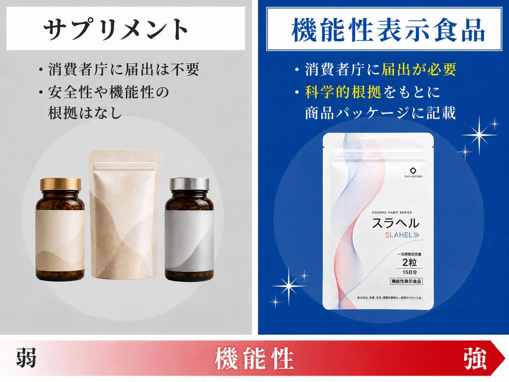
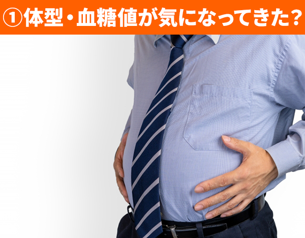
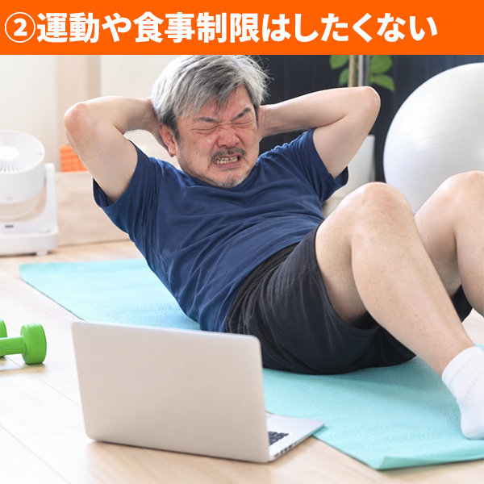
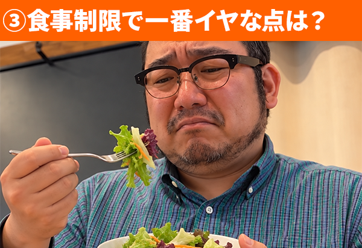
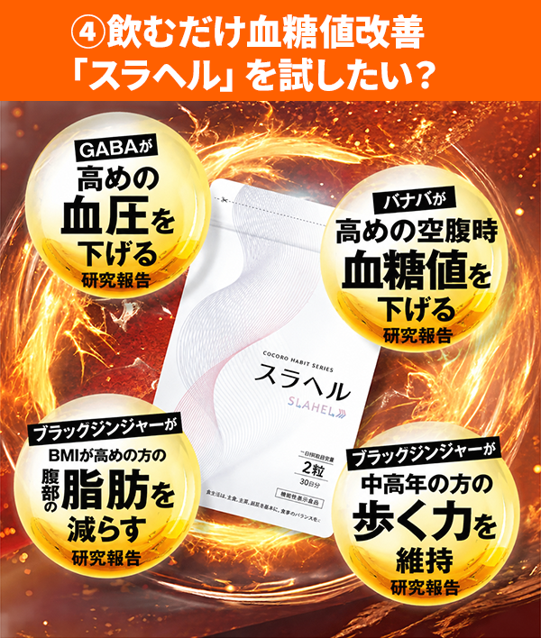

※機能性関与成分バナバ葉由来コロソリン酸の研究報告
※BMIが高めな方において※HbA1c4.6%～6.2%の方
仕事終わりのビール
最ッ高においしいですよね？！
疲れた体にこの一杯が沁みる...!
こうなるともう
手が止まりません！
でもこんな生活を続けているうちに
みるみる出てくる下っ腹！
「昔はもっと痩せてたよな...?」
ツケが回り
健康診断でも厳しい結果が・・・
※HbA1c4.6%～6.2%の方
担当の医者からも...
厳し目のお言葉・・・
こうなると
最悪の結末に・・・？！

「このままじゃダメだ！」と思い
頑張ってダイエットをしてみても
血糖値が全然下がらない
どころかむしろ悪化？！
これだけ頑張ったのに
「結果が出ないのは心が持たないよ...」
しかもこの食事制限が
３６５日ず～～～っと続くの？！
というか一生これ続けるの？！
そう思うと
もう苦しくて仕方がないです。
でも我慢しなければ
糖尿病まっしぐら...
遺された家族にも
迷惑をかけることに...
でも、やれることはもう
全部やったはず
これ以上何をすればいいんだ...
そう思っている方に
朗報です！
実は今
東大卒医師が本気で推奨した
日本予防医学研究所開発の
「血糖値改善法」で

「本当に血糖値が下がる！」
※機能関与成分バナバ葉由来コロソリン酸の研究報告
※HbA1c4.6%～6.2%の方
と話題になってるんです！

/素晴らしい数値がズラり・・・\
HbA1cもここまで？！

医学誌にも効果が掲載されていて
消費者庁が正式に効果を認めてるから

普通のサプリなんかとは
比べ物にならないレベル！
累計で200万袋売れていて
※自社調べ（2023年12月)
実際に成功した人が続出！
※HbA1c4.6%～6.2%の方
す...すごい...!
でも、どうしてそんなに脂肪が落ちたり
血糖値が下がるんだろう？
そう思った方！
その秘密を1分で読めるように
まとめました！👇

そもそも血糖値・中年太りは
基礎代謝の低下が原因なんです

基礎代謝とは
何も運動していなくても
減っていくカロリー
のことで
私たちが
日常的に呼吸したりすることで減っていく
何もしていないのに使われるカロリーのこと！
(何もしてないのにカロリーが使われるってスゴくありがたい✨)
ただこの基礎代謝カロリー
年齢とともに
グングン低下！
このまま低下すると
摂取カロリー＞基礎代謝カロリーとなり
余ったカロリーは
全て脂肪になってしまう！
だから
「サラダしか食べていないのに太る...」
という結果に....
しかも
内臓脂肪が増えてしまうと...
血糖値をグングン上げてしまうのです！
なぜかというと
内臓脂肪には
インスリンの分泌を弱める様々な物質が
大量に含まれているから...!
インスリンとは
・糖を分解して
・血糖値を下げてくれるホルモンで
このインスリンの分泌が
脂肪によって弱まると
血糖値がみるみる上昇！
「このままじゃマズい・・・！」
と思って
それ、
絶対やめてください！
我慢して食事制限したり
運動を頑張ってる方、
大変言いにくいのですが...
脂肪を減らす・血糖値を下げる
という観点からすると
逆効果になる危険性があるんです！
最近の研究では
運動・食事制限を無理にすると
脳が「飢餓信号」を放出する
とされており
脳がカラダに
糖分・脂肪を貯めこむ指令を出すせいで
「血糖値・脂肪はむしろ増加する」ことが
判明しているんです
無理な運動・食事制限は
絶対にしてはいけない
というのが最新医学の定説なんです！
一昔前の知識でダイエットをすると...むしろ逆効果になってしまうんです！
「運動も食事制限も逆効果って...
じゃあ、逆になにやればいいんだよ...」
とお困りの方！
実は
「ある成分を取り入れさえすれば」
好きなものを気兼ねなく食べる方が
むしろダイエットは効果的だと判明してるんです
「そんなムシのいい話があるの・・・？」
安心してください。
医学誌にも効果が掲載されていて
消費者庁が効果を認めている、「科学的な対策」です
それがこちら👇
東大卒医師達が効果を推奨している
「飲む血糖値改善法」
「スラヘル」

好きなものを普通に食べているのに
1日2粒飲むだけで
血糖値がグングン下がる！
※機能関与成分バナバ葉由来コロソリン酸の研究報告
あんなに頑固で下がらなかった血糖値が
え、嘘でしょってくらい
スルスルと・・・！
※機能関与成分バナバ葉由来コロソリン酸の研究報告
しかも
下っ腹の出たぽっこりお腹も
こんなにスッキリ！
※2026年５月時点
実はこれ
日本の肥満対策の権威
日本予防医学研究所が開発し

消費者庁にも効果が正式に認められた
機能性表示食品

権威ある医学誌にも
血糖値を下げる効果が認められていて

本当に血糖値を下げると
完売続出！
※HbA1c4.6%～6.2%の方
その効果の秘密は
1000年以上前から受けがれる
2つの超希少成分にありました...!
①ブラックジンジャー
かつては東南アジアの王族階級しか
摂取できなかった
超希少漢方
「ブラックジンジャー」
実はこの成分
少しでも体に取り入れると
基礎代謝をグンっ！と引き上げて
カラダの消費エネルギーを大幅に増やす！
余計な脂質を燃やしちゃうせいで
脂肪がみるみる溶けていく！
何もしなくてもやせるカラダへと変貌！
実際に、
お腹の全脂肪を
平均-13.8㎠減らす機能が報告されています。

※本データは、配合成分「ブラックジンジャー由来ポリメトキシフラボン」に関する研究結果であり、本商品の効果を保証するものではありません
現地では「黒いダイヤ」とも呼ばれ
近年、獲得が困難になっているほど...
②バナバ
インスリンと同様の成分を
たっぷりと含んでいて
血液中の糖分をエネルギーとして変換
血糖値をグングン下げる効果のある
パワフルな花
※HbA1c4.6%～6.2%の方
余計な糖をエネルギーに変えてくれるから
カラダがエネルギッシュに蘇る！
これらの貴重な成分が


脂肪をみるみる溶かし
血液中の糖分をパワーに変換！
エネルギッシュで若々しい肉体に
してくれます！
おかげさまでお腹ポッコリが
こんなにもスッキリ！
あんなに頑固だった血糖値も
みるみる下がってる...!
※HbA1c4.6%～6.2%の方
夜の方もアグレッシブに（笑）
※ブラックジンジャーについて精力の増強が報告済み。https://journals.sagepub.com/doi/10.1177/1934578X241281615?utm_source=chatgpt.com
口コミでも大好評！
※個人の感想であり効果を保証するものではありません
そこまで言われると、
さすがに気になりすぎる..💦
実際に私が試してみました!

早速注文！
本当に簡単に買えました！

粒が小さいので
喉に全然引っかからずに飲みやすい！
風味もほとんどないけど
強いて言うなら植物の香り？
がちょっとしますね！
しばらく飲み続けた結果...
ビールも飲んで、
食事制限も運動も特にしなかったのですが
え、お腹周りが凄いスッキリしてる...!
気になっていた血糖値も
えええ？嬉しすぎる結果に！
血糖値を下げる効果が認められてる
だけあって
普通のサプリとはレベルが違います・・・
もちろん
普通に食べて飲んでるのに、ですよ？
あんなに頑張って
運動・食事制限してたのは
なんだったのか、って感じです💦
これだけ効果がスゴいと
試したくなる気持ちがヤマヤマ
ですが！
どこよりもお得にお求めできる情報を
まとめましたので
こちらからご確認ください！

血糖値が一発でグングンさがる
下っ腹もスッキリ🌠
あの頃の若々しい体型に！
累計200万袋売れた
消費者庁お墨付きの
「スラヘル」
※自社調べ（2023年12月)
ものがものだけに
普通に買うとお値段もそれなり・・・
ですが！
普通に買うのは
実は今
公式が商品企画に役立てるため
アンケートキャンペーンを実施中！
このページから
3問30秒で終わるアンケート回答で
定価2990円のところ
1990円に大幅値引き！
※定期初回購入価格

※税込み価格
さらに
本日限定で
1500円OFFクーポン発行中！
490円でゲットできちゃうんです！
※税込み価格
1日たった30円って、安すぎ！

※定期初回分490円を15日分で案分
もちろん
送料無料だし

品質に自信があるので
全額返金保証付き！

定期回数のお約束もありません！

本当にノーリスクで試せる♪
👇からアンケートに回答して
ぜひ490円でもらってください！

※税込み価格

はい
いいえ

はい
いいえ

食べたいものが食べれない
人付き合いに支障が出る
家族に負担をかける
味が良くない

はい
いいえ